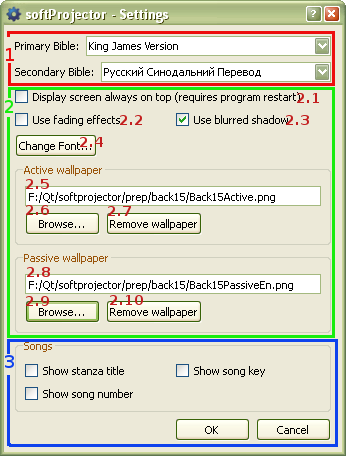

5.1 General Settings

1. Bible Settings:
Settings only for showing bible. See details
here.
2. General Settings:
Settings that will effect entire program.
-
- When check, display screen will be always on top. All other programs will be behind the screen. If PowerPoint or software is used to display on projector, leave this unchecked. SoftProjector will have to restart in order for this setting to take place.
- If checked, the transition from slide to slide will be faded through instead of static change
- Create a shadow behind the text, making it easier to read text when light wallpaper are used
- Use this to change the font, font size and font style, for the text that will be projected
- Wallpaper that is used then text it been displayed. The text box shows file location; cannot be edited manually
- Browse and select active wallpaper.
- Removes active wallpaper and returns it back to black display screen
- Wallpaper that is shown when nothing is to be shown. When "Hide" button is pressed, this wallpaper will be shown.
- Browse and select passive wallpaper.
- Removes passive wallpaper and returns it back to black display screen
3. Song setting:
Settings only when showing songs. See details
here.